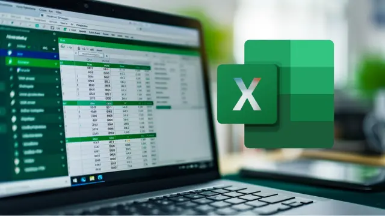

1. Clases Particulares de Microsoft Excel

Aprende desde la gestión de celdas básicas hasta tablas dinámicas, funciones lógicas ($VLOOKUP$, $IF$) y automatización de reportes.
Inversión: S/. 45 por hora.
Diseñados para llevarte desde cero hasta un nivel competitivo y autónomo.

Aprende desde la gestión de celdas básicas hasta tablas dinámicas, funciones lógicas ($VLOOKUP$, $IF$) y automatización de reportes.
Inversión: S/. 45 por hora.
Domina la creación de documentos académicos y profesionales, formatos APA, tablas de contenido automáticas y correspondencia masiva.
Inversión: S/. 35 por hora.

Diseña diapositivas interactivas y profesionales. Manejo de transiciones, animaciones lógicas, inserción de multimedia y estructuras discursivas.
Inversión: S/. 35 por hora.

Conviértete en un experto en el análisis de datos con Power BI. Aprende a crear informes interactivos, visualizaciones atractivas y cuadros de mando que permitan una toma de decisiones basada en datos.
Inversión: S/. 50 por hora.
Aprende a usar la inteligencia artificial para potenciar tu creatividad y productividad. Domina la creación de prompts efectivos para generar texto, imágenes, música y más.
Inversión: S/. 50 por hora.